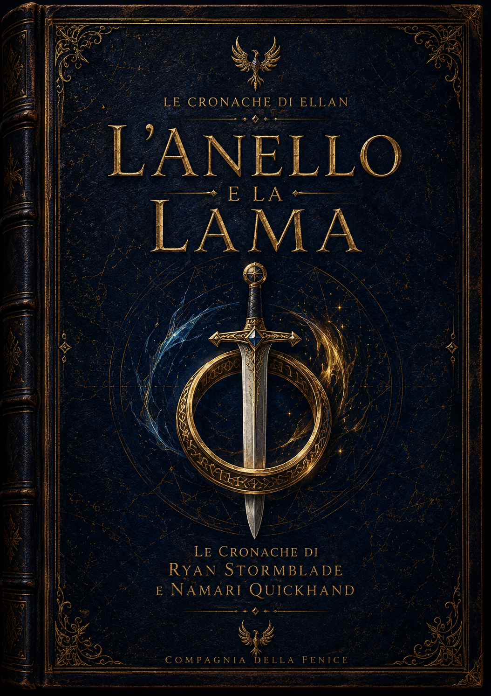
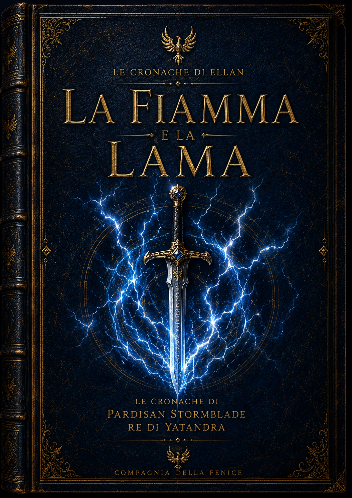
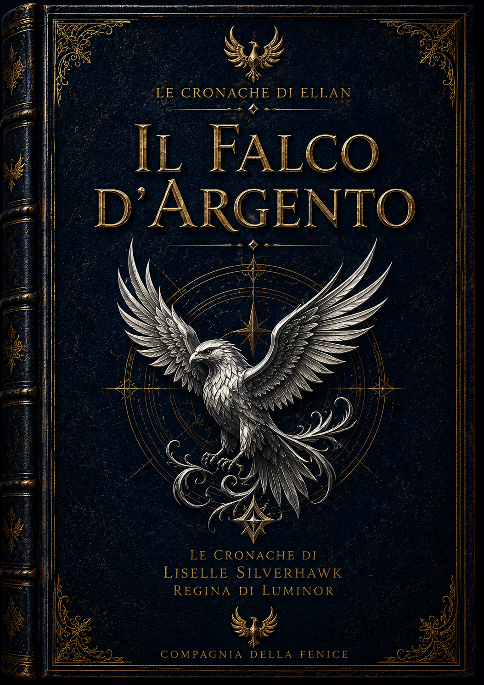
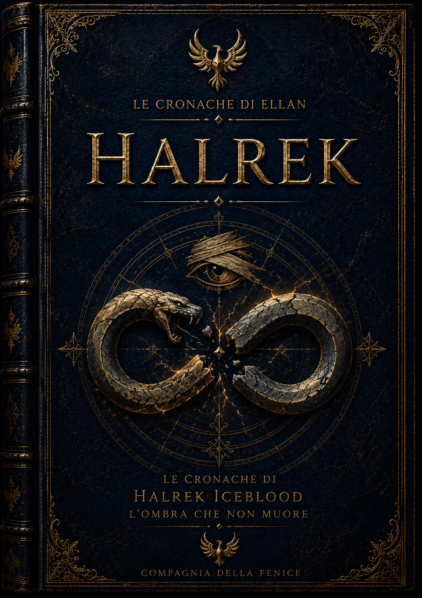

Le Cronache di Ellan
Storie, leggende e memorie provenienti dai Reami di Ellan. Alcune sono racconti tramandati dai cronistorici. Altre sono testimonianze dirette di eventi che hanno cambiato il destino del mondo.
Biblioteca delle Cronache

L'Anello e la Lama
La storia del principe Ryan Stormblade e della contrabbandiera Namari Quickhand. Un racconto di amicizia, amore, avventura e destino.
Leggi
La Fiamma e la Lama
Le imprese giovanili di Pardisan Stormblade, prima che diventasse il Re di Yatandra.
⏳ In Arrivo
Il Falco d'Argento
L'ascesa di Liselle Silverhawk e il cammino che la portò al trono.
⏳ In Arrivo
Le Cronache Perdute di Halrek
La verità dietro l'uomo che osò ribellarsi agli Eterni.
⏳ In Arrivo